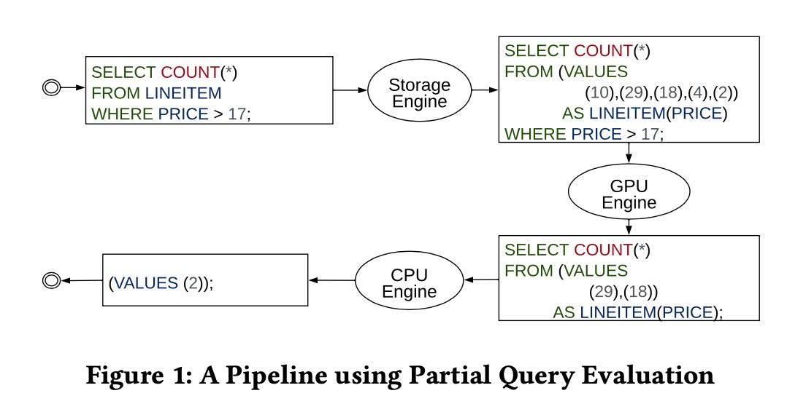
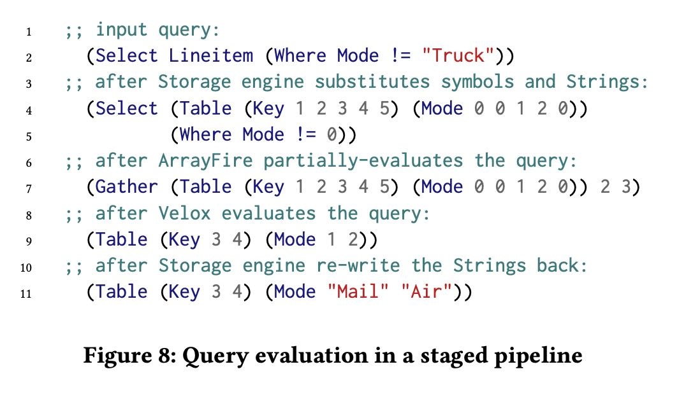

BOSS - An Architecture for Database Kernel Composition
文章里面这个PQE(partial query evaluation)是重点，其实是将整个执行计划不断地在每个engine之间做partial evaluation, 直到最后产生结果。比如GPU比较适合做没有分支的计算，CPU适合做有分支的计算，StorageEngine则适合做存取数据以及encode/decode等工作。

接着主要的问题就是，怎么使用一种通用的表达方式在各个engine之间传递信息，需要做到 a) 减少data copy b) 减少biolerplate code c) unopinonated (这样每个engine可以发挥最大的功能) d) language over library.
[!NOTE] Remain Unopinionated. To ensure that different kernels with differ- ent designs can be integrated easily, a composable DMS must not impose design decisions on kernels. In software engineering, this principle is commonly referred to as “unopinionated” design. In the context of DMSs, the principle applies to aspects as diverse as logical data model, data representation, memory model, execution model or concurrency control. A framework must, for example, support the integration of Volcano-style query processors [19], Bulk-processors [4], X100-style [56] processors and just-in-time compiled execution engines [35].
Minimize Boilerplate. Without an appropriate development frame- work, integrating external database kernels requires substantial boil- erplate code. Such code is a productivity hazard for developers and a major source of bugs and performance overhead. Integrating a GPU- coprocessing library, for example, requires code to convert data objects, manage data transfers, schedule kernel execution, control concurrent execution and transfer results back. The amount of boil- erplate code can easily exceed that of actual data processing code. The codebase of the Ocelot extension to support GPU-accelerated data processing in MonetDB [23], for example, contains roughly 5,000 lines of OpenCL kernel code for kernel operations and more than 23,000 lines of boilerplate C-code to coordinate execution.
Zero Copies, Minimal Transformations. Creating copies of data is a costly operation for high-performance DMSs. A well-designed monolithic system, therefore, does not create copies of data unless absolutely required. To be performance-competitive, a composed DMS must not unnecessarily copy data either.
Interestingly, many kernels have the same internal data rep- resentation, making zero-copy data transfer possible: MonetDB, Velox, ArrayFire and Arrow, e.g., share almost the same data repre- sentation (the only difference being minor optimizations in string representations). Upon close inspection, this is not surprising, as all of these are designed to maximize CPU efficiency, and mod- ern CPUs are optimized for a specific data representation: that of the ANSI C language. Most kernels store datasets in C-arrays aug- mented with additional metadata (such as histograms or sortedness flags). However, all kernels we studied support the extraction of the C-arrays and the construction of the kernel-specific representation from C-arrays without copying data. If exploited effectively, this enables zero-copy data transfers of data between kernels.
Language over Library. This principle is, to a large extent, a con- sequence of the first and the second but deserves special mention due to its effect on the design. A composition framework that is lightweight and unopinionated must resort to the least common denominator of the kernels it aims to support. That least common denominator is the host programming language (usually C or C++, though Rust and Swift are viable alternatives). This largely pre- cludes the use of libraries to coordinate execution, generate code or transform data. By avoiding libraries, the framework allows a state-of-the-art compiler to perform optimizations such as function inlining, loop unrolling or vectorization even across kernel bound- aries. Note, however, that this only applies to the framework and does not prevent kernels from using libraries internally.
有了这套langauge之后，就可以在各个engine之间传递信息/数据了(code + data). 其实这套language非常类似lisp, 但是为了适合目前高性能计算和数据库生态，还是要用C++
